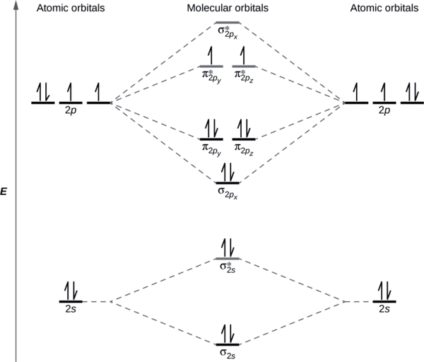
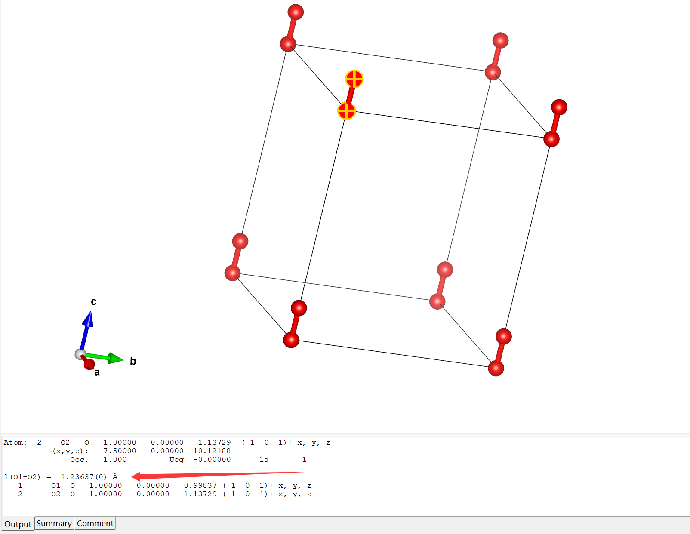

氧气分子单点能的计算及结构优化
单点能计算又叫做静态计算，计算时不会优化结构
INCAR
1 | SYSTEM = O |
POSCAR
1 | O |
KPOINTS
1 | K-POINTS |
运行mpirun -n 8 vasp，正常结束，OUTCAR的部分信息如下，显然，单点计算的结果并不可靠
1 | spin component 1 |
1 | spin component 2 |

对氧气进行结构优化，更改INCAR
1 | SYSTEM = O |
计算后发现
1 | spin component 1 |
用VESTA打开优化好的结构(CONTCAR)可以查看键长

本博客所有文章除特别声明外，均采用 CC BY-NC-SA 4.0 许可协议。转载请注明来源 Storm's Storehouse！
相关推荐

2025-05-25
科研中的小问题
实验部分 ¶球磨 球磨的原理是什么？ 球磨的作用是什么？ 200rpm合不出来，300rpm就能合出来？ ¶X-ray diffraction X射线是什么？ X射线衍射的原理和用途是什么？ XRD谱图的横坐标和纵坐标分别是什么意义？ XRD为什么会产生峰？峰是什么意义？ 横坐标2theta角度为什么通常选择20 #mjx-7651cfd{ display:contents; mjx-assistive-mml { user-select: text !important; clip: auto !important; color: rgba(0,0,0,0); } mjx-container[jax="SVG"] { direction: ltr; } mjx-container[jax="SVG"] > svg { overflow: visible; min-height: 1px; min...

2025-04-29
截断能ENCUT的选取
ENCUT是用来指定平面波基组能量截止值的参数 以上是wiki对ENCUT的描述，POTCAR文件中已经包含了元素的ENMAX和ENMIN，这也是互联网上对ENCUT的选择方案对通常是1.3倍的ENMAX 侯柱峰老师提供了另外一种方法并指出通过该方法选择的ENCUT通常能满足1.3倍ENMAX，供参考使用 截断能指定了用于波函数展开的平面波基组的截断能量，此能量越大则用来描述波函数的平面波基组越多，精度越高，但计算也越耗时。 可以通过计算测试来选择合适的ENCUT。 以下是用于测试的脚本： 123456789101112131415#!/bin/shrm WAVECARfor i in 150 200 250 300 350 400docat > INCAR <<!SYSTEM = Si-DiamondENCUT = $iISTART = 0 ; ICHARG = 2ISMEAR = -5PREC = Accurate!echo "ENCUT = $i eV" ; time vaspE=`grep "TOTEN" OU...

2025-04-14
VASP学习笔记
VASP概览 VASP是一个复合的软件包，主要功能是从头算量子力学分子动力学模拟，使用赝势方法或者投影增强波+平面波基组的方法（projector-augmented wave，即PAW方法，也是当下VASP最主流的方法）。VASP的技术实现使用高效的矩阵对角化和Pulay/Broyden电荷密度混合算法。原子核附近的真实电子波函数为了满足正交性，振荡得非常剧烈。用平面波这个描述这种剧烈振荡十分困难，由此产生出三种解决方案： US-PP超软赝势，构造“超软”的赝波函数，在芯区尽量平滑，它是早期VASP的主要方法 PAW投影增强波，它将全电子波函数精确地映射到一条平滑的赝波函数上，是VASP的默认和主流方法 模守恒赝势（NCPP），它的计算成本高，对轻元素尤其明显，是VASP的早期标准，现多用于高精度对比 手册里明确写出：The VASP guide is written for experienced user, although even beginners might find it useful to read。初学者直接上手Wiki会比较困难。 对于任何基于平面波方法...

2025-04-12
电池储能微专业
¶相、相变和相图 锂电池中的相？——有助于获得晶体结构与组成 关注材料的e物相，包括晶体结构、化学组成、结晶度、固液态 从电子自旋态来看，3d电子常常具有自旋长程关联作用，表现出不同的磁性状态 磁态来解释充放电过程中的异常情况 一级相变 二级相变 大部分固态相变属于一级相变，只有少部分属于二级相变 显著平台——一级相变 保持固溶体——二级相变 NIPP钠电池正极 前驱体的合成可能出现杂相 ¶温度和相组成是最重要的两个参量（others:高压、磁场、电场、机械搅拌） ¶高压法一级固相合成法制备偏铝酸锂 ==LiAlO~2~==具有较高化学稳定性和热吻星星 六方相R-3m正极材料, #mjx-8bbcc52{ display:contents; mjx-assistive-mml { user-select: text !important; clip: auto !important; color: rgba(0,0,0,0); } ...

2025-03-20
一种掺杂硫银锗矿电解质的合成
19日晚第一次进实验室，师姐带我合成一种固态电解质，参考文献有Angew. Chem. Int. Ed. 2019, 58, 8681 –8686等。由于电池是锂电池，需要隔绝 #mjx-5f601df{ display:contents; mjx-assistive-mml { user-select: text !important; clip: auto !important; color: rgba(0,0,0,0); } mjx-container[jax="SVG"] { direction: ltr; } mjx-container[jax="SVG"] > svg { overflow: visible; min-height: 1px; min-width: 1px; } mjx-container[jax="SVG"] > svg a { fill: blue; strok...

2026-06-25
文献复现（一）
需要复现的文献是[Data-Driven First-Principles Methods for the Study and Design of Alkali Superionic Conductors][https://pubs.acs.org/doi/10.1021/acs.chemmater.6b02648] ¶初筛 这里有必要先了解一下.cif结构文件，从补充材料里面可以获取到，作者说是从ICSD数据中获得的，但是约10年过去了，我在ICSD中没有检索到这个结构，其中的最后几行是这样的： 1234567891011121314151617181920212223242526272829_atom_site_label_atom_site_type_symbol_atom_site_symmetry_multiplicity_atom_site_Wyckoff_symbol_atom_site_fract_x_atom_site_fract_y_atom_site_fract_z_atom_site_B_iso_or_equiv_atom_site_occupancy_...
评论